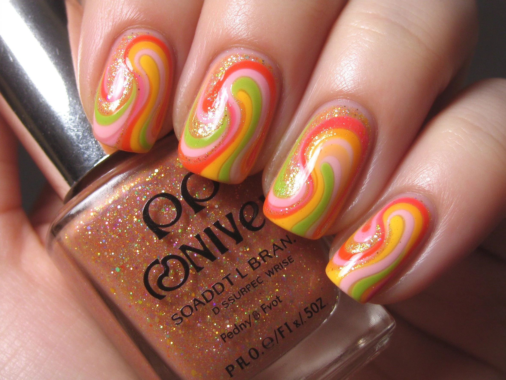

美甲復古美甲是什麼？中階入門攻略
復古美甲是把 50–70 年代的配色和圖案搬回指甲：芥末黃、磚紅、泡泡眼線式的微笑線。
復古美甲原理與辨識重點：美甲師不說的舊色調
復古風（Retro）強調『時代感』：顏色不是現在的亮粉亮藍，而是褪色感的芥末黃、磚紅、赭石、橄欖綠、奶油色；圖案用對比色畫笑臉、愛心、波浪、幾何線條。有點像 70 年代海報或美式复古咖啡廳的色票。
誰適合做復古美甲？懷舊款對號入座
喜歡 vintage 衣服、古著店、復古咖啡廳、聽爵士乐的人；本身穿搭走奶油色、燈芯絨、針織、貝雷帽的人。
復古美甲美甲施作步驟：法式＋復古配色
上好復古底色（奶油、芥末黃、磚紅擇一）→ 跳指用對比色畫一個小笑臉、小愛心或一條波浪線 → 想要法式款就用對比色畫微笑線 → 亮面封層 → 照燈。
復古美甲優缺點分析：美甲持久度與傷甲評估
| 優點 | 說明 |
|---|---|
| 跟古著穿搭超搭、耐看、不會像快時尚那樣兩個月就膩。 | 是歐美流派的招牌，中階就能上手 |
| 缺點 | 說明 |
| 復古色通常偏霧、偏灰，白皮不一定顯白；要搭對衣服才好看，搭現代運動服會有一點違和。 | 前置與別用現在流行的螢光粉、寶藍去做『復古』——那不叫復古，叫拼錯。復古的靈魂是『褪色感』。沒顧好會打折 |

復古美甲新手雷區：幾何圖案與常見錯誤
注意：別用現在流行的螢光粉、寶藍去做『復古』——那不叫復古，叫拼錯。復古的靈魂是『褪色感』。
復古美甲和其他美甲做法的差別比較
跟『極簡美甲』都走色塊路線，但極簡是現代感的留白，復古是有時代氣味的對比色，氣味差很多。
復古美甲美甲常見問題 FAQ
Q：復古風最經典的配色是什麼？ A：奶油底＋磚紅笑臉、芥末黃＋橄欖綠波浪、米白底＋咖啡微笑線，這三組最經典。
Q：男生做復古美甲適合嗎？ A：很適合。男生版只要做芥末黃或橄欖綠單色，不要畫笑臉，就有一種文青大叔的感覺。
Q：復古款會不會很容易退流行？ A：不會，它本來就是『過去流行過的』，輪迴回來反而比當代款更耐看。